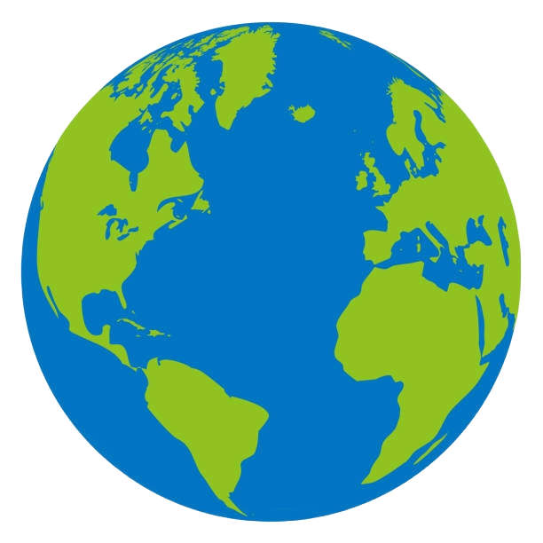

LaPlanète
Accueil
|
Aquatique
|
Terrestre
|
Quizz
Vos informations
Nom :
Prénom :
Date de naissance :
Adresse mail :
Veuillez remplir tous les champs
Choix du thème
Quiz sur les écosystèmes terrestres
En quoi consiste l'ODD 15 ?
a) Sauver les pandas et les tigres uniquement
b) Protéger les océans, les mers et les ressources marine
c) Préserver les écosystèmes terrestres et lutter contre la déforestation
Combien d'hectares de forêt partent en fumée chaque année ?
a) 1.3 millions
b) 13 millions
c) 130 mille
En quoi est fait la corne du Rhinocéros (très prisée et raison de la disparition d'une grande partie de sa population)?
a) De kératine, comme les ongles humains
b) D'ivoire, comme les défences des éléphants
c) De bois, comme les arbres
Pourquoi la population de papillon monarque a chuté de 80% en 20 ans ?
a) La déforestation au Mexique détruit leur lieu d'hivernage
b) Ils sont chasés depuis qu'ils ont donné leur nom à une Monster
c) Leur milieu de vie principal a été inondé
d) Les pesticides tuent l'asclépiade, leur unique nourriture
Quel sont les solutions qu'on peut mettre en place à l'échelle individuelle ?
a) Participer à des programmes de reforestation
b) Allumer des feux de camps au milieu de la forêt
c) Recycler ses papier
d) Acheter des object issus d'espèces manacées comme des défences d'éléphants
Quiz sur les écosystèmes marins
En quoi consiste l'ODD 14 ?
a) Sauver les coraux et les baleines à bosse uniquement
b) Protéger les océans, les mers et les ressources marine
c) Préserver les écosystèmes terrestres et lutter contre la déforestation
Durant les 30 dernières années, quel part des coraux ont disparut ?
a) 50%
b) 25%
c) 45%
A combien est évalué le nombre d'individus capturé par les commerce aquariophile chez les poisson-clown chaque années?
a) 300 mille
b) 1 Million
c) 50 mille
Quel sont les principales raison de la disparition de nombreux individus chez les baleines chaque années ?
a) Les collisions avec les navires
b) Les requins
c) La pollution sonore
d) Avaler les plongeurs
Quel sont les solutions qu'on peut mettre en place à l'échelle individuelle ?
a) Arracher les coraux pour en faire un joli bouquet
b) Faire une croisière à travers une aire marine protégée
c) Réduire sa consommation de plastique à usage unique
d) Choisir des produits de la mer durables (label MSC)
Resultats du Quiz
Essai
Thème
Score
Meilleur score :
/ 21